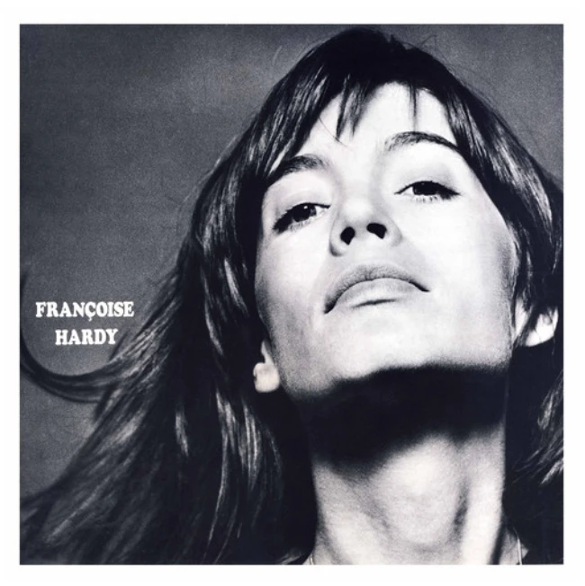

La Question
Je suis entré dans La Question avec un a priori assez condescendant : Françoise Hardy, dans ma tête, c’était surtout de la chanson française jolie, douce, peut-être un peu sage. Viens a suffi à faire voler ça en éclats. Une basse lancinante, des cordes, une guitare presque flamenco, des paroles très imagées, une vraie tension harmonique : en quelques minutes, j’étais ailleurs.
Le fil rouge du disque, c’est cette guitare acoustique aux couleurs ibériques et brésiliennes. Elle ne sert pas seulement à accompagner la voix : elle donne une texture, un mouvement, parfois même une sensualité physique aux morceaux. Petit à petit, le rapprochement m’est devenu évident : il y a quelque chose d’une bossa nova feutrée dans ce disque. Un toucher souple, beaucoup d’air, des harmonies sophistiquées sans démonstration, et cette manière de rester calme tout en laissant circuler une tension discrète.
Ce disque ne cherche jamais à m’impressionner. Il finit pourtant par m’envoûter.
La voix de Hardy joue énormément dans cette sensation. Elle est douce, retenue, presque murmurée, mais jamais neutre. L’émotion n’est pas surjouée : elle passe par le souffle, la fragilité, la façon de poser les mots. C’est ce qui donne au disque ce côté charnel et organique qui m’a surpris. Je ne reçois pas seulement des chansons ; j’ai l’impression d’entrer dans un climat.
Et ce climat n’est jamais figé. Même sous la pluie fait passer la guitare de gauche à droite dans le champ stéréo. Chanson d’O abandonne presque les paroles au profit de syllabes répétées, jusqu’à transformer la voix en matière. Le Martien ose des effets vocaux, de la réverbération, une ambiance franchement incongrue. Si mi caballero, avec son sifflement, fait surgir une image de western. Tout cela pourrait sembler disparate ; pourtant, rien ne casse la cohérence du disque.
C’est même ce qui m’a le plus frappé : sous une apparence très douce, La Question est un album étonnamment aventureux. Il tente des choses, déplace les codes de la chanson française, joue avec l’espace et les timbres, mais ne sacrifie jamais l’émotion à l’idée. Les expérimentations restent toujours au service d’une sensation.
Les cordes sont particulièrement belles dans cette logique. Sur Oui je dis adieu, elles se répondent comme dans une question-réponse tendue, puis la musique retombe dans quelque chose de lumineux et mélancolique. Sur Bâti mon nid, ce sont les progressions harmoniques qui m’ont arrêté net : les accords semblent changer la lumière sous la voix, avec une élégance presque irréelle.
Il y a une magie dans ces chansons que j’ai du mal à réduire à la technique.
Les paroles, justement, sont peut-être la partie du disque que j’ai le moins immédiatement saisie. J’ai surtout reçu leur climat avant leur sens. Pourtant, certains morceaux passent très directement : La Maison, par exemple, avec cette image d’un lieu vide de ses habitants, touche à quelque chose de presque universel. Une maison silencieuse peut contenir une séparation, un deuil, une époque terminée, le simple passage du temps. Là, la tristesse devient concrète sans que le texte ait besoin d’en faire beaucoup.
Ce n’est toujours pas mon registre le plus naturel. Il reste chez moi un petit mur devant la chanson française, quelque chose dans la forme, la diction, peut-être dans mon histoire d’écoute, qui crée encore un peu de distance. Mais La Question l’a sérieusement fissuré. Et surtout, il l’a fait sans me demander d’oublier mes goûts : il est venu me chercher précisément par les guitares, les harmonies, les cordes, le travail de production, la stéréo, la mélancolie et cette étrange sensualité sonore.
Je pensais écouter un disque que j’allais surtout respecter. J’en sors touché, surpris et avec l’envie d’y revenir pour mieux entendre les textes. C’est probablement la meilleure preuve que mes a priori étaient à côté de la plaque.
8/10. Un disque doux, charnel, mélancolique et bien plus aventureux que je ne l’imaginais — freiné seulement par mon propre petit mur avec la chanson française.